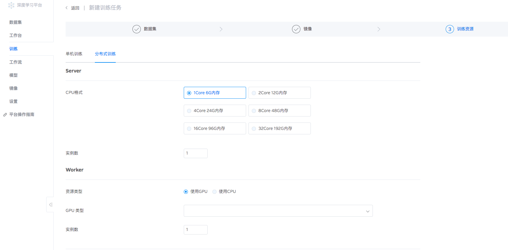
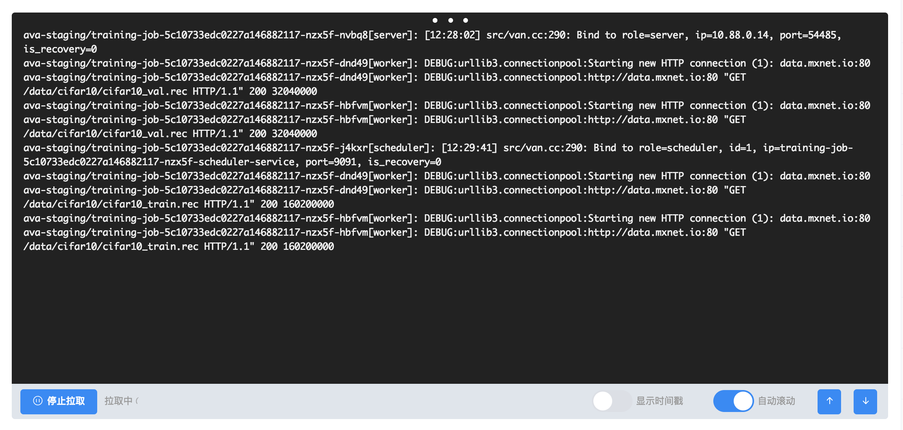

分布式训练管理
分布式训练目前仅支持MXNet框架，需要根据手册修改单节点训练代码、参数后使用。
启动分布式训练
分布式训练方法与传统训练基本相同，由于目前仅支持MXNet，在镜像选择时请选择公开镜像ava-mxnet:1.3.1，或者自行编译支持分布式功能的MXNet镜像。
在训练资源页面中，选择“分布式训练”:

参数介绍：
Server (参数服务器）： 参数服务器用于管理模型参数，包括记录、更新、分发等功能。请确保参数服务器内存总量大于模型容量。
Worker（工作节点）： 工作节点用于实际模型计算，将会从参数服务器调取参数、计算后返回更新值。节点性能决定计算效率。
实例数 （Instance）： 实例数决定启动Server及Worker的数量，分布式调用资源总和为： Server 实例数 + Worker 实例数， 如果资源不足会导致启动失败，请确认资源量后再申请。
配置实例：
套餐选择：
Server： 2Core 12G * 1
Worker： P100 2GPU 12Core 120G * 2
资源消耗：
CPU_Total = 2 + 12*2 = CPU * 26
GPU_Total = P100 2GPU * 2 = GPU * 4
PS：分布式镜像编译方法
Pip安装官方1.2.1及以后版本；或使用`USE_DIST_KVSTORE=1`Flag手动编译MXNet。
分布式代码修改要点
MXNet分布式训练的透明度较高，修改训练代码需要注意以下两点：
修改训练代码KVStore参数，单节点训练中普遍使用'device',需要修改为下列参数：
dist_sync: Behaves similarly to local but with one major difference. With dist_sync, batch-size now means the batch size used on each machine. So if there are n machines and we use batch size b, then dist_sync behaves like local with batch size n * b.
dist_device_sync: Identical to dist_sync with the difference similar to device vs local.
dist_async: Performs asynchronous updates. The weights are updated whenever gradients are received from any machine. No two updates happen on the same weight at the same time. However, the order is not guaranteed.
修改Batch Size： 分布式训练中，Batch Size为单个Worker节点所需的Batch Size总和。假设启动两个4卡Worker并希望每卡的Batch Size为
64，则在运行代码是需要设置Batch Size为64*4=256。这样两个worker节点每卡Batch Size为64，Batch总和为256*2=512.
相关参考文档：
- 官方文档： https://mxnet.incubator.apache.org/faq/distributed_training.html
- MXNet分布式原理： https://blog.kovalevskyi.com/mxnet-distributed-training-explained-in-depth-part-1-b90c84bda725
- Github实例：
分布式模型选型
由于线上网络设备尚未更新，网络带宽、延迟对于模型更新过程影响较大。建议选择超参量较大的模型进行初步尝试，如Resnet-50、Inception-V3等。这样可以通过延长计算时间从而隐藏部分IO时间，达到相对理想的结果。分布式训练不适用于高IO模型，例如Alexnet，频繁的IO会很快暴露出网卡延迟高的问题，形成瓶颈，严重影响训练效率。
日志监控
训练启动后，可以通过日志按钮查看监控界面，查询界面如下：

根据前缀可以分辨不同节点的类型，[scheduler]数目固定为1，负责全部节点的协调工作；[server] [worker]则根据设定的实例数，产生相应数量的节点。请结合节点ID查询日志，例如截图中出现的dnd49[worker], hbfvm[worker]表明日志产生于两个不同的Worker节点。